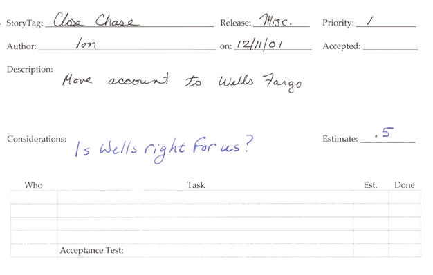
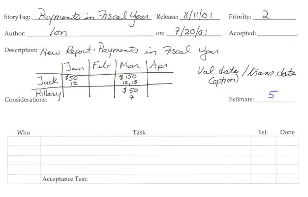
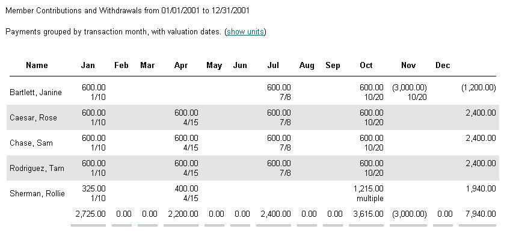

about Extreme Programming
with Perl
| Previous: Chapter 3: Perl | Next: Chapter 5: Iteration Planning | |
We plan to communicate our intentions and to prepare for the unplanned. In XP, the plan evolves with feedback from building and using the system. We adjust our intentions as we see our ideas being realized. Sometimes reality matches what we want. Other times we gain new insight and change our plans accordingly. XP ensures we get our recommended daily allowance of reality checks. Planning is a three part process in XP:
This chapter covers release planning. The subsequent chapters discuss the other two activities. Planning GameTo start the ball rolling, the customer and programmers sit in a room together to define the requirements, priorities, and deadlines for the release. We call this the planning game. Planning is an interpersonal process, a game, if you will. The customer wants a long list of features, and the team wants to implement them all. Unfortunately, the team is limited in what it can accomplish in one release. In XP, the planning game defines the rules, pieces, and roles. The objective is clear communication of business objectives and technical constraints. RolesIn XP, we speak about the customer as a single person, although several people may fill this role simultaneously. It's important that the people acting as the customer speak in one voice. This ensures that the project adds business value optimally--to the the best of the customer's knowledge. Obviously, no one knows the optimal path, that's why XP encourages tight feedback loops. However, the team cannot be divided in its goals, or the project will fail. XP has no mechanisms to resolve disputes between the people acting as the customer. The role of the customer is played by people who represent the collective business interests of the project. For example, product managers, users, and clients act as the customer. The business requirements, priorities, and deadlines are defined by the customer. XP defines the roles of customer and programmer unambiguously. The customer's job is to identify what needs to get done, and the programmers' job is to explain how it will get done. The customer is not allowed to say an estimate is wrong or to contradict a technical statement made by the programmers. And, conversely, programmers cannot say a feature is unnecessary or the customer has her priorities wrong. The planning game is based on mutual respect for these equal and distinct responsibilities. If you are new to XP, you may want to have an impartial coach participate in your first few planning games. The planning game is non-adversarial, and a coach may help to remind people that planning is about getting as accurate a picture as possible given limited data. StoriesA story is how the customer communicates a requirement in XP. The content of a story is simple, usually one or two sentences. Here are some actual stories:
For the most part, the customer writes the stories. Note the incompleteness of the stories in some cases. For example, DemoClubUpdate doesn't specify what data is required. If the programmer needs more info, he will ask the customer when he starts implementing the story. Some of these example stories were not written by the customer, for example, DBExportSplit and InstallDisks. Technical stories come up during implementation, but it is the customer who decides how important they are. The programmers' job is to note the technical need on a story card, and to present the business case to the customer during the planning game. On-site CustomerThe customer does not write the stories and say, "get to it!" There is an explicit trade-off with simple requirements; the customer must stick around for the implementation. She must be available to the programmers to fill in the details during execution of the plan. A story is not sufficient criteria for acceptance. Part of the customer's job is to write the acceptance tests with the help of the programmers. Perl makes this easy. Acceptance Testing explains how in detail. Story CardsThe stories are written on story cards. Here's the CloseChase story card: 
I use story cards for almost everything. In this case, it's an administration problem. The mechanism is always the same: when there is a problem to solve, write it on a story card. It represents a work item, and all work items need to be put in the queue. It often is a good idea to prepare story cards before the planning game. Everybody should keep a stack on their desks. The customer may think of new stories while using the system. The programmers may encounter internal quality problems while coding. There is no officially-sanctioned XP story card. Each project may need special customizations. This story card is one we have developed for our company's needs.[2] Here's the way we interpret the fields:
Dead WoodOne important characteristic of story cards is their physical implementation. They are real dead plant matter. You write on them with ink, not electrons. PDAs and laptops are not recommended for planning meetings.[3] The planning game is an interpersonal communication process. Story cards are a simple communication medium, which enables people to have as much face time as possible. You can read the cards from any angle, in almost any lighting condition. The stories listed so far have been text. Sometimes text won't do. Paper is also an excellent medium for creating pictures on-the-fly. Here's another example that demonstrates the versatility of story cards to capture the story: 
And, here's the final user interface: 
The simple picture was enough to get the point across.[4] EstimationAfter a customer completes her portion of the story card, the programmers can estimate its implementation, and note any special considerations, such as, new hardware requirements or prerequisite stories. Estimation is an art, where consistency is much more important than precision or accuracy. The customer uses them to assess the relative cost of stories to aid prioritization. Programmers use estimates to compute and compare velocities (velocity is the sum of estimates for an iteration--see Velocity for details). Stories are estimated in ideal programming days, not real-time. It's hard enough to forecast a story's implementation without considering other factors such as, hardware failures, sick time, or activation of military reservists. Not to mention unforeseeable refactorings required to accommodate the implementation or changes requested by the customer as the implementation evolves. Ideal day are the way we avoid thinking about such factors that we can neither influence nor estimate. Don't be afraid of making incorrect estimates. By definition, estimates are forecasts made with incomplete information. You should be concerned when estimates end up matching reality exactly, because it's likely due to the effects of Parkinson's Law: work expands so as to fill the time available for its completion. Plan-driven methodologies often succumb to Parkinson's Law. Programmers are rewarded for making or beating their estimates. Over-estimation is a great way to make sure this happens. In XP, if you over-esimate, you simply get more work to do. You don't get to go home early, because the length of an iteration is measured in real-time, not ideal time. There is always more business value to add, and the code can always be improved through refactoring. Other XP feedback mechanisms, such as, small releases, pair programming, and continuous integration, also help to combat Parkinson's Law. So don't worry about Parkinson, the weather, or politics. Just write your best guess as to how many ideal days the story will take to implement, and move on to the next card. Easing EstimationSometimes you can't come up with a number that you have any confidence in. The typical problem is that the story is too large, and it needs to be split up. As a rule of thumb if the story comprises more than one week's worth of work, decompose it into smaller stories. For example, this is a story that was too large for me to estimate:
With the help of a customer, we split the story into four smaller, more easily estimable stories:
We were able to deliver business value on the first story. After the second story, the customer had a functional site from the end-user perspective. We were able to populate the site using non-web-based file transfer tools. The last two stories gave the customer full administrative control of the site, which is business value, but not as important as having a site at all. Most stories can be broken down this way. It's quite similar to decomposing a story into tasks (see Iteration Planning). Spike SolutionsSome stories defy estimation or decomposition. The programmers knows so little about the problem domain that they may not even know if it is feasible to implement the story. Some fundamental research is required. In XP, we call this a spike solution. Two programmers prototype, mockup, or just explore the problem space in detail for a short time.
System integration is often important to spike. There are usually so many variables that are out of the programmers' control. For example, one project we were involved in required us to download transactions from financial websites. Our first attempt was to use the Open Financial Exchange (OFX) protocol. It turned out that OFX is not very open, and we hit a non-technical roadblock. In parallel with talking to the OFX consortium, we also spiked a web crawling solution for downloading transactions from financial websites. We quickly learned that the algorithmic complexity was not in the transaction download component but in the backend--integrating the transactions into an existing accounting database. This was an unexpected and important discovery. The spike solution gave us the information we needed to estimate our stories. The spike solution should be estimated, too. This caps the time the customer must pay for experimentation. The goal is to determine feasibility and cost, not to implement a fully working solution. Spike solutions are thrown away. The result of a spike solution is a new story or stories, which can be estimated with confidence.PrioritizationOnce the stories that can be estimated have been estimated, the customer groups and prioritizes them. The physical ordering process requires a large table so the customer can see as many of the cards as possible. The customer groups the stories in two piles: this release and subsequent releases. The size of the release depends on the customer, although you should avoid releases exceeding a few months. The team will divide this release into iterations that last a few weeks at most (see Iteration Planning). From the customer's perspective each iteration is a partial but usable software distribution. The size of a release is therefore a bit of a fuzzy concept. The customer may choose to stop work on a release before all the stories are implemented, and shall still have a working system albeit with fewer features than planned. This is why prioritization is so important and can't be left to the programmers. The customer should see a continuous flow of software distributions in order of decreasing business value. XP eschews big bang releases. A working end-to-end system is available very early on in the implementation of a release plan. For this reason, programmers should avoid creating too many dependencies between stories. It's all too easy to control the prioritization through unnecessary linking. If you find yourself saying, "We need to build the infrastructure for this story." Remember XP's guideline: you aren't going to need it (YAGNI). Infrastructure evolves from refactoring as you discover what parts of the system need it. When the planning game is over put the subsequent releases pile into storage until the next planning game. The team may get done early in which case pull them out mid-release and add enough stories to meet the deadline for the current release. The nice thing with XP is that you can add or rearrange stories at any time. The stories that are already implemented have already been tested within the context of a working system. There's no end-of-release panic to integrate the parts into the whole. Indeed, the system probably is already in use well before the end of the release. All the FactsThe customer's job is hard. She is managing other factors besides implemention complexity, such as, time to market and resource acquisition. To simplify the planning process, she has to have all the data from the programmers. Any work which consumes time and resources needs to be on the planning game table. The considerations of stories may be significant. If the story requires a relational database to be implemented, you need to make this clear. Or, it may be obvious that a story requires major code restructuring. If so, get it on a card. While you're coding, you'll notice problems. You may have to copy-and-paste, because the refactoring required to make the pasted code reusable may be lengthy.[5] Write down the problem on a story card and bring it to the next planning game or iteration planning meeting. The customer and management are made aware of internal quality issues before they get out of control. Small ReleasesRelease planning is the way we communicate business objectives to the programmers and enable programmers to communicate technical constraints. The planning game is a simple forum for effective communication that relies on interactive feedback. By limiting the length of releases to one or two months, we limit the length of planning meetings. This means we have fewer objectives to discuss. It is easy to maintain the cohesion of small releases and to identify dependencies and other potential problems. XP simplifies plan digestion by encouraging us to take a small bite and chew it thoroughly before taking the next bite. Footnotes
|
||
| Previous: Chapter 3: Perl | Next: Chapter 5: Iteration Planning | |
Copyright © 2004 Robert Nagler (nagler at extremeperl.org)
Licensed under a Creative Commons Attribution 4.0 International License.